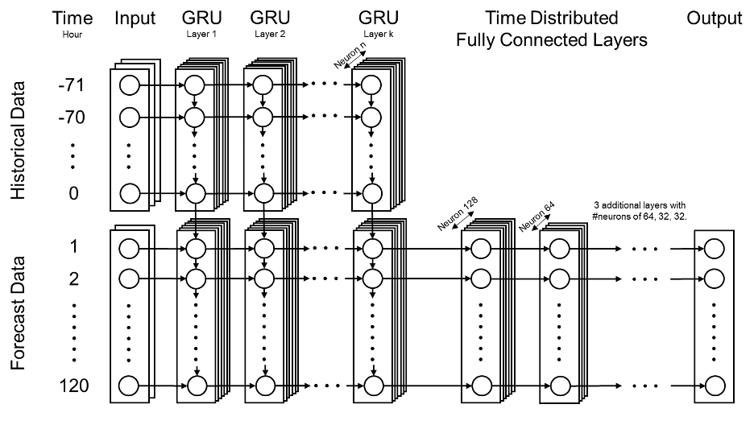
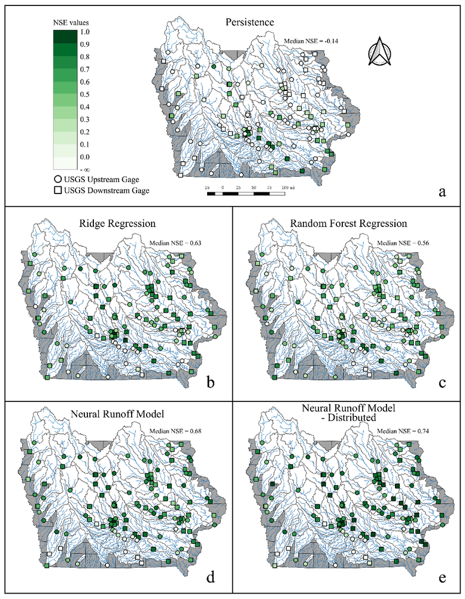

Although many studies and publications have applied machine learning and deep learning models on the runoff predictions, one of the limitations is that they can only predict a single timestep with a short leading time (less than 24 hours). This study proposes a new deep recurrent neural network approach, Neural Runoff Model (NRM), which has been applied on 125 USGS streamflow gages in the State of Iowa for predicting the next 120 hours. We use a semi-distributed model structure with observation and forecast data from the model output of upstream stations as additional input for downstream gages.
The proposed model outperforms the streamflow persistence, ridge regression and random forest regression on majority of the gages. Our model has shown strong predictive power and can be used for long-term streamflow predictions. This study also shows that the semi-distributed structure in NRM can improve the streamflow predictions by integrating water level data from upstream stream gauges. The model can be considered as a successful attempt at integrating multiple measurements and model results in one model for long-term rainfall-runoff modeling. Real-time forecast applications with data-driven techniques like deep learning can possibly be a complement or substitute for physically-based models, especially for underperforming watersheds.
Related Articles
- Xiang, Z., & Demir, I. (2020). Distributed long-term hourly streamflow predictions using deep learning–A case study for State of Iowa. Environmental Modelling & Software, 104761. (DOI: https://doi.org/10.1016/j.envsoft.2020.104761)

Neural Runoff Model (NRM) architecture for streamflow forecasting.

NSE values for proposed NRM models with benchmarks at the 120-hr ahead predictions in WY2018 on 62 USGS upstream gages in circles and 63 downstream gages in squares in the State of Iowa. Figure a for the result of 120 h persistence, figure b for the ridge regression, figure c for random forest model, figure d for proposed neural runoff model, figure e for distributed neural runoff model on downstream gages.